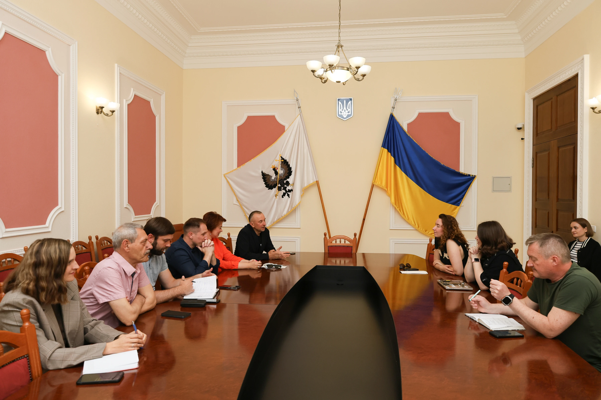

Держава
Передаємо державним інституціям напрацьовані практики, рекомендації та інструкції й працюємо над їхнім системним впровадженням. Ми прагнемо, щоб проблеми суспільства вирішувались комплексно – як громадами, так і владою.

Іра (Чека) Цибух часто говорила про молодість українських інституцій. Ми працюємо зокрема над тим, щоб наші інституції ставали інституційними.
Як приклад – робота над Хвилиною мовчання. Від суспільного запиту ми перетворили цей ритуал на сталу практику, яка тепер закріплена Законом України (відкриється в новій вкладці).
Проєкти в межах діяльності
Усі проєкти-

Хвилина мовчання
Ритуал подяки, пошани та памʼяті. Символічна обʼєднавча дія, відкрита для широкого кола суспільства: зберігати памʼять про війну і спільну боротьбу за незалежність.
-

Прощання з прапором
Церемонія, коли державний символ завершує службу — і ми визнаємо це з повагою. Коли прапор зношується й втрачає вигляд, постає питання: що робити далі?
Інші напрями
Усі напрями-

Суспільство
Говоримо про складні й важливі теми, повʼязані з памʼяттю про війну: як прощатися, як говорити про загиблих, як уникати знеособлення втрат.
-

Освіта
Досліджуємо, як діти, підлітки та вчителі сприймають тему памʼяті й якою хочуть бачити розмову про неї в школі. Розробляємо практичні матеріали для освітян, проводимо лекції та зустрічі, створюємо документи-опори для роботи з темою памʼяті.